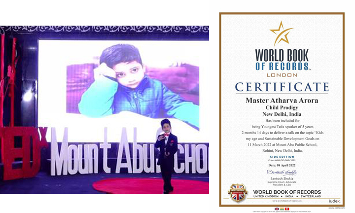
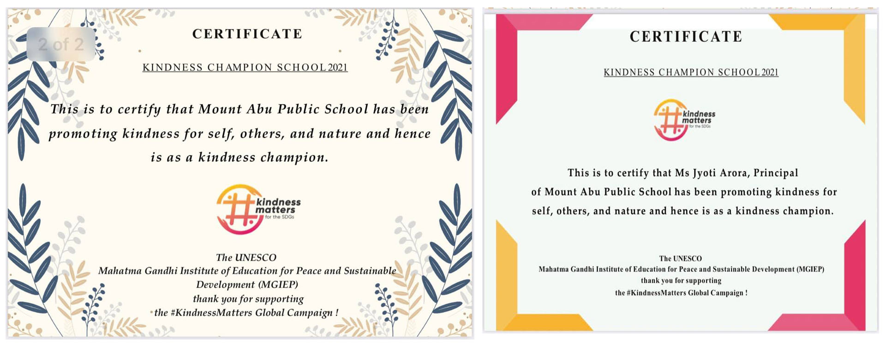

GLORY AT GLANCE
|  | YOUNGEST TEDEX SPEAKER OF MOUNT ABU PUBLIC SCHOOL
Athrav Arora,the young student of Mount Abu Public School was recognised by the World Book of Records, London as the youngest TedEx Speaker. His extraordinary oratory skills and presentation on "Kids My Age and Sustainable Development Goals" at Ted Ex at School mesmerized all making him the youngest TedEx Speaker at the age of 5 years 2 months and 14 days. Heartiest Congratulations to this Child Prodigy!! |
|  | MAPS EMERGES AS KINDNESS CHAMPION The school along with the School Principal, Ms. Jyoti Arora were recognized as the “Kindness Champion by UNMGIEP for the relentless effort put in to mobilize the young learners to achieve the 17 SDGs through transformative acts of kindness. The school collaborated with UNMGIEP for Kindness Matters Campaign and created a positive culture of kindness, in which every student along with other schools’ learners were motivated to join the campaign. |